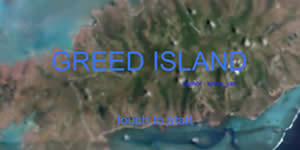
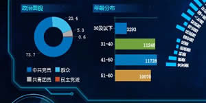
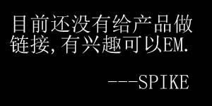

From Westminster Abbey's gravestone.
When I was young and free and my imagination had no limits, I dreamed of changing the world. As I grew older and wiser, I discovered the world would not change,so I shortened my sights somewhat and decided to change only my country.
But it, too, seemed immovable.
As I grew into my twilight years, in one last desperate attempt, I settled for changing only my family, those closest to me, but alas, they would have none of it.
And now as I lie on my deathbed, I suddenly realize: If I had only changed my self first, then by example I would have changed my family.
From their inspiration and encouragement, I would then have been able to better my country and, who knows, I may have even changed the world.
画家用画笔描绘出对世界的理解。
钢琴家敲击着琴键，渲染着世人的灵魂。
欢迎来到我的GITHUB，我是SPIKE，职业是WEB前端开发。“开发”是我的工具，是实现设计最好的方法。专注技术不局限于技术。我们一起加油吧~。
交流邮箱:1417515948@qq.com
HTML5，CSS3，JavaScript，Ajax，JSON
JQuery，CreateJS，Bootstrap，D3JS
Oracle，MSSQL，My SQL，Tribon，Rhino
正在研究:AngularJS，WebGL ThreeJS
作为猎人迷制作的贪婪之岛H5游戏
某数据分析项目H5主屏
APP活动动画(截图好累还截不好)
某网站理财活动H5小页游
THREE 3D 天空盒-3D练手中
 T。T
作者一栏是我的状态,有时会有更新.
技能一栏是做过些东西使用的方法,随着时间的推移会增加,会减少,减少的自然是被新技术淘汰不用了.
作品一栏会持续添加些做的东西的片段,偶尔也会在单独作品里写一些小文章.
月圆一栏是个秘密.